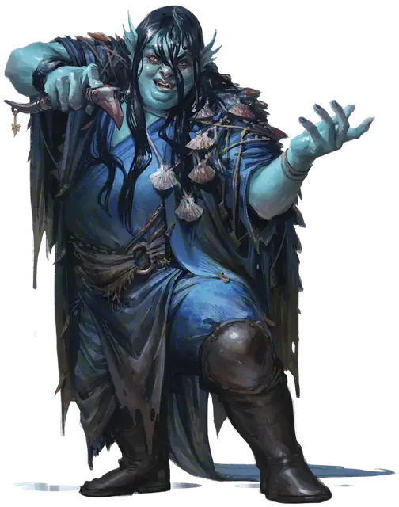

Зикран
Zikran
Средний Гуманоид (Водяной дженази), хаотично-злой, именной НИП

Класс Доспеха 12 (15 с доспехами мага)
Хиты 144 (18к8 + 63)
Скорость 30 футов, плавая 30 футов
| мод | спас | ||
|---|---|---|---|
| СИЛ | 10 | +0 | +0 |
| ЛОВ | 14 | +2 | +2 |
| ТЕЛ | 12 | +1 | +1 |
| мод | спас | ||
|---|---|---|---|
| ИНТ | 20 | +5 | +9 |
| МДР | 15 | +2 | +6 |
| ХАР | 16 | +3 | +3 |
Навыки История +13, Магия +13
Чувства пассивное Восприятие 12
Языки Общий, Акван, Первичный, Подземный, Сахуагинский
Опасность 12 (8400 опыта)
Бонус мастерства +4
Особенности
Сопротивление урону. кислота, урон от заклинаний; немагический дробящий, колющий и рубящий урон (от каменной кожи).
Амфибия. Зикран может дышать и воздухом и под водой.
Сопротивление магии. Зикран совершает с преимуществом спасброски от заклинаний и прочих магических эффектов.
Использование заклинаний. Зикран является заклинателем 18-го уровня. Его базовой характеристикой является Интеллект (Сл спасброска от заклинания 17, +9 к попаданию атаками заклинаниями). Зикран может неограниченно накладывать маскировку и невидимость, и у него подготовлены следующие заклинания волшебника:
• Заговоры (неограниченно): волшебная рука, огненный снаряд, свет, фокусы, электрошок
• 1 уровень (4 ячейки): волшебная стрела, доспехи мага*, обнаружение магии, опознание
• 2 уровень (3 ячейки): обнаружение мыслей, отражения, туманный шаг
• 3 уровень (3 ячейки): контрзаклинание, молния, полёт
• 4 уровень (3 ячейки): изгнание, огненный щит, каменная кожа*
• 5 уровень (3 ячейки): конус холода, наблюдение, силовая стена, призыв элементаля
• 6 уровень. (1 ячейка): сфера неуязвимости
• 7 уровень (1 ячейка): телепортация
• 8 уровень (1 ячейка): сокрытие разума*
• 9 уровень (1 ячейка): остановка времени
*Зикран накладывает эти заклинания на себя перед сражением.
Действия
Кинжал. Рукопашная или дальнобойная атака оружием: +6 к попаданию, досягаемость 5 футов или дистанция 20/60 футов, одна цель. Попадание: Колющий урон 4 (1к4 + 2).
Логово
Элементальная пушка — объект Большого размера с КД 16, 80 хитами и иммунитетом к урону ядом и психической энергией. Она установлена на поворачивающейся платформе, привинченной к помосту. Пушка черпает энергию из кристалла в центре комнаты, который начинает искрится всякий раз, когда пушка собирается выстрелить. Если кристалл будет уничтожен, и магическое переносное устройство Зикрана, и сама пушка станут бесполезными. Кристалл — объект Большого размера с КД 13, 40 хитами и иммунитетом к урону ядом и психической энергией.
Действия логова
Элементальная пушка. При значении инициативы «20» (в случае ничьей проигрывая всем оппонентам) Зикран использует управляющее пушкой магическое устройство, выстреливая из неё в одно видимое им существо, при условии, что существо находится в мастерской или на лестнице. Цель Зикрана должна совершить спасбросок Ловкости Сл 17, получая 24 (7к6) урона холодом в случае провала или половину этого урона в случае успеха. Обстановка подвала может предоставить половину укрытия, если существо захочет за ней спрятаться.
Описание
Дженази прочно связаны с Внутренними Планами и в их венах течет кровь джинов. Как и мариды с Элементального Плана Воды, Зикран взбалмошен и непредсказуем.
Драка персонажей на лестнице с элементалями и мефитами предупредила Зикрана о появлении незваных гостей и он подготовился к встрече, наложив на себя заклинания доспехи мага [mage armor], каменная кожа [stoneskin] и сокрытие разума [mind blank] и взяв управляющее элементальной пушкой магическое устройство в виде металлического стержня с наконечником в форме птичьей головы. Элементаль воздуха и элементаль воды подчиняются приказам Зикрана.
Воспользовавшись моментом, Зикран хвастается своими планами восстановить легендарную крепость облачных великанов, превратив ее в летающую крепость, на которой он сможет вступать в битву. Если кто-либо из персонажей держит на виду Фолиант Зикрана о Западных Ветрах, Зикран предлагает персонажам шанс сдаться и отказаться от книги в обмен на свои жизни. Если партия откажется от этого предложения или если Зикран не знает, что у персонажей есть книга, архимаг дженази и его элементали атакуют.
Архимаги — это сильные (и обычно весьма старые) заклинатели, преданные изучению магических искусств. Добрые помогают королям и королевам, а злые сами являются тиранами или же стремятся стать личами. Те, кто не добрые и не злые, уединяются в башнях, где и практикуют магию, не отвлекаясь на посторонние дела.
Обычно рядом с архимагом находится один или несколько подмастерий, а жилище заполнено многочисленными магическими защитами и стражниками, отбивающими охоту вмешиваться в дела хозяина.